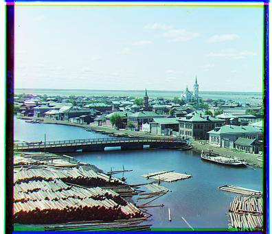
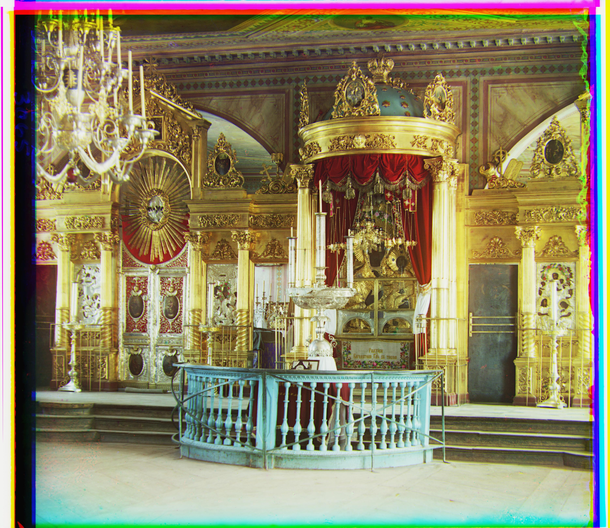

Overview
In the early twentieth century, Prokudin-Gorskii was given special permission to travel across the Russian Empire and take photographs of what he saw. He came up with the idea to record three exposures of every scene using red, green, and blue filters so that he could then extract a color image. Luckily, digitized versions of these glass plates have been made available through the Library of Congress, and the goal of this assignment is to take the digitized glass plate images and, using image processing techniques, automatically produce a color rendering of the scene. The program that I have created, and will describe below, divides the glass plate image into thirds and aligns the second and third color (G and R) channels to the first (B) in order to get a color photo.
Naive Approach
The naive implementation I implemented exhaustively searches over a window of possible displacements ([-15:15] pixels) and scores each combination of x and y offsets using the Sum of Squared Differences (SSD) metric. In order to make my program more efficient, I decided to parallelize the computation by assigning different combinations of offsets to different threads.
The JPEG images were sufficiently small for this naive implementation to run in ~400 milliseconds on the instructional machines in Cory Hall. Below are the results for the naive approach on two of the four smaller images.
The JPEG images were sufficiently small for this naive implementation to run in ~400 milliseconds on the instructional machines in Cory Hall. Below are the results for the naive approach on two of the four smaller images.

Cathedral
R[x=3,y=12], G[x=2,y=5]
0.385 seconds
0.385 seconds

Monastery
R[x=2,y=3], G[x=2,y=-3]
0.398 seconds
0.398 seconds
Image Pyramid
The larger TIFF images, on the other hand, were too large to use this algorithm so I used an image-pyramid to get an additional speedup resulting in a computation that took ~1 second to align both color channels. The image pyramid represents the image at multiple scales, scaled by a factor of two on each level, and processes the image starting from the coarsest level until it reaches the original resolution.
My implementation resizes the image by a factor of two until the smallest dimension is at most 150 pixels. Once this threshold is reached, the program iteratively runs the naive alignment algorithm on the color channels searching over a window of displacements that is proportional to the depth of the recursion. The offsets that are returned by the naive algorithm are scaled by a factor of two and used to center the window of displacements that the next level will search through.
This algorithm was successful for most of the TIFF images. For example:
My implementation resizes the image by a factor of two until the smallest dimension is at most 150 pixels. Once this threshold is reached, the program iteratively runs the naive alignment algorithm on the color channels searching over a window of displacements that is proportional to the depth of the recursion. The offsets that are returned by the naive algorithm are scaled by a factor of two and used to center the window of displacements that the next level will search through.
This algorithm was successful for most of the TIFF images. For example:
Lady
R[x=10,y=112], G[x=7,y=51]
1.079 seconds
1.079 seconds
Selfie
R[x=36,y=173], G[x=29,y=78]
1.131 seconds
1.131 seconds
Only two of the images did not align well:
Emir
R[x=-68,y=-119], G[x=24,y=48]
1.046 seconds
1.046 seconds
Village
R[x=-80,y=0], G[x=-10,y=0]
1.110 seconds
1.110 seconds
The problem with using pixel intensity is that these vary across the three channels, especially if the image is dominated by a single color, as in the case in these two images.
Edge Alignment
Since the pixel intensities vary across the different color channels, I decided to use the Laplacian of Gaussian method of edge detection filter in Matlab as my features. I selected this filter because it gave good results experimentally and it tool less time to compute compared to some of the other filters.
This fixed the problem that that the two images above had, as is illustrated in the following images.
This fixed the problem that that the two images above had, as is illustrated in the following images.
Emir
R[x=41,y=106], G[x=24,y=49]
7.039 seconds
7.039 seconds
Village
R[x=23,y=137], G[x=13,y=65]
7.705 seconds
7.705 seconds

Cathedral
R[x=3,y=12], G[x=2,y=5]
0.485 seconds
0.485 seconds
Bridge
R[x=8,y=69], G[x=-2,y=14]
7.318 seconds
7.318 seconds
Harvesters
R[x=15,y=124], G[x=18,y=60]
7.208 seconds
7.208 seconds

Lady
R[x=12,y=116], G[x=8,y=55]
7.367 seconds
7.367 seconds
Melons
R[x=13,y=173], G[x=10,y=83]
7.334 seconds
7.334 seconds

Monastery
R[x=2,y=3], G[x=2,y=-3]
0.516 seconds
0.516 seconds
Onion Church
R[x=36,y=107], G[x=27,y=51]
7.412 seconds
7.412 seconds
Selfie
R[x=36,y=173], G[x=29,y=77]
7.560 seconds
7.560 seconds

Settlers
R[x=-1,y=15], G[x=0,y=7]
0.468 seconds
0.468 seconds
Three Generations
R[x=10,y=108], G[x=13,y=48]
7.226 seconds
7.226 seconds

Tobolsk
R[x=3,y=7], G[x=3,y=3]
0.466 seconds
0.466 seconds

Flowers
R[x=-14,y=120], G[x=-3,y=18]
7.188 seconds
7.188 seconds
Train
R[x=32,y=85], G[x=7,y=41]
7.381 seconds
7.381 seconds
Turkmen
R[x=29,y=117], G[x=22,y=57]
7.273 seconds
7.273 seconds

Altar
R[x=23,y=90], G[x=18,y=42]
6.997 seconds
6.997 seconds
Art Room
R[x=32,y=133], G[x=28,y=63]
6.908 seconds
6.908 seconds
Crosses
R[x=14,y=156], G[x=14,y=59]
7.301 seconds
7.301 seconds

Dagestani Types
R[x=4,y=90], G[x=3,y=9]
7.002 seconds
7.002 seconds
Peasant Girls
R[x=20,y=11], G[x=9,y=-16]
7.061 seconds
7.061 seconds
Textiles
R[x=79,y=162], G[x=47,y=76]
7.130 seconds
7.130 seconds